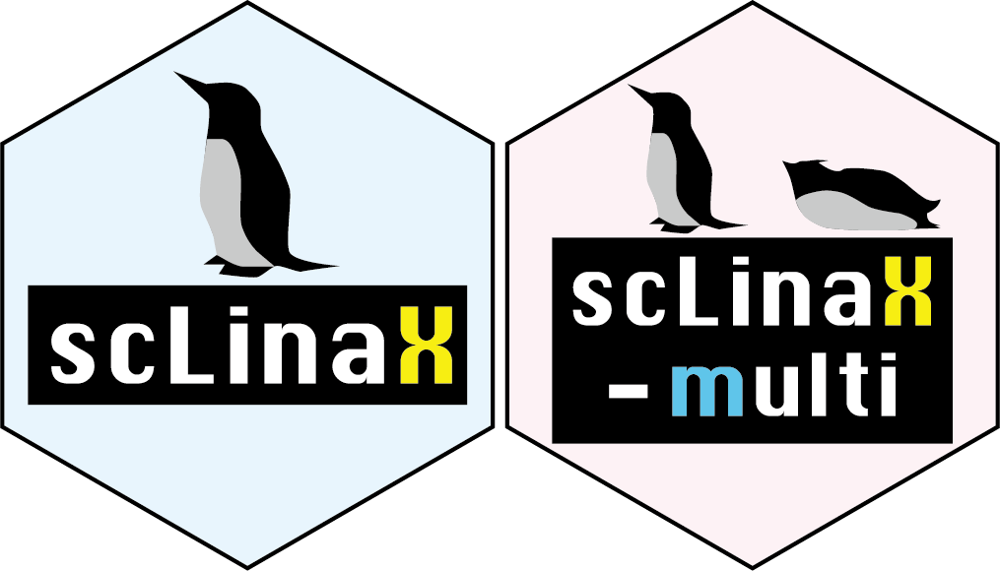
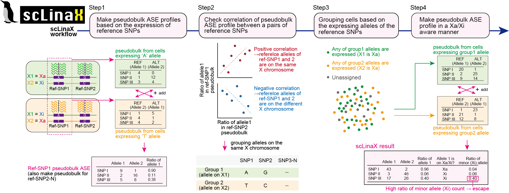
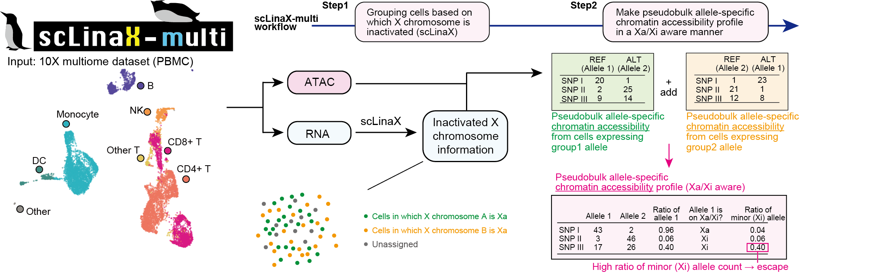

scLinaX is software for the quantification of the escape from X chromosome inactivation (XCI). Input of the scLinaX is a single-cell level allele-specific expression profile generated from single-cell RNA-seq (scRNA-seq) data (germline genotype data is optional).

Overview of scLinaX
scLinaX also has an extension to the multi-modal single-cell omics data, scLinaX-multi. scLinaX-multi can evaluate the escape from XCI at the chromatin accessibility level. scLinaX-multi takes allele-specific read count data for both of the RNA and ATAC data.

Overview of scLinaX-multi
Installation
You can install the development version of scLinaX from GitHub with:
# install.packages("devtools")
devtools::install_github("ytomofuji/scLinaX")User Guide
Please see scLinaX User Guide.